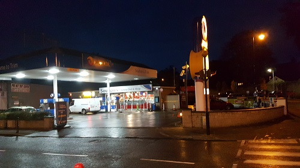
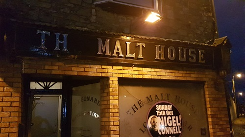

Places to Visit
Trim has many places to visit from Trim Castle to Local Pub , here are some place were you can visit.
- SuperTrim has opened recently and in my opinion the food in there is very good and I heard other people opinions the food is also nice and cheap.The delivery is cheap and fast 
- Souhans serves food early in the mornings from 8am-2pm , so you dont need to wait for take away to open . 
- Malt House is a local pub, on weekends its open up too 2pm . If the shops are closed you can buy alchohol in the Malt House for nearly the same price as in a shop. This pub is for more like elderly people and sports fan.